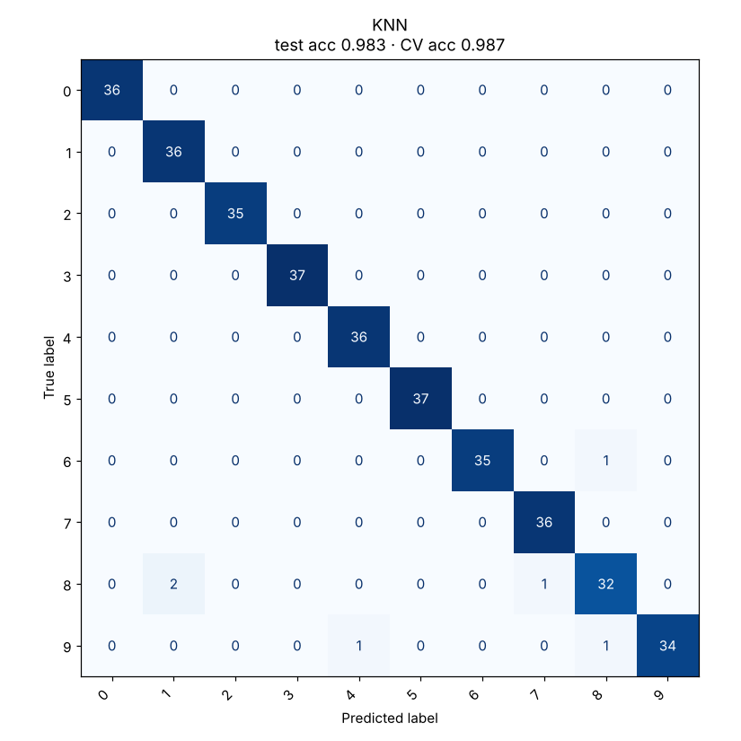

K-Nearest Neighbors
To classify a new point, look at the k closest training points and let them vote.
Try it
Experiment: Set k = 1: train accuracy hits 100% but the boundary gets jagged and test accuracy usually drops. That gap is overfitting.
The idea
KNN does not learn a formula. It simply remembers the training data. When a new point arrives, it finds the k training points nearest to it and predicts the most common class among them.
The choice of k is everything. With k = 1 the boundary wraps around every single point, including noisy ones. With a large k the boundary is smooth but may miss real detail. Hover over the demo to see the neighbours being consulted.
How it works, step by step
- Store the training data. There is no training beyond that.
- For a new point, compute its distance to every training point (usually straight-line Euclidean distance).
- Take the k closest points.
- Predict the majority class (or, for regression, the average value). Optionally give closer neighbours a bigger vote.
ŷ = most common label among the k nearest neighboursBecause it relies on distance, a feature measured in thousands drowns out one measured in decimals. Scale your features first.
Strengths and weaknesses
Strengths
- Trivial to understand and implement
- Draws any boundary shape
- Adding new data needs no retraining
Weaknesses
- Prediction is slow on big data: it compares against every stored point
- Needs feature scaling
- Weak in high dimensions, where all points are roughly equally far apart
Use it when: Small to medium data with meaningful distances, such as images of digits or recommendations.
Avoid it when: Millions of rows, hundreds of features, or features on wildly different scales.
In this repository
Dataset: Digits (1797 rows, 64 features)

from sklearn.neighbors import KNeighborsClassifier
model = KNeighborsClassifier(n_neighbors=5, weights="distance")
model.fit(X_train, y_train) # just stores the data
model.predict(X_test)Full code: models/03_knn. Train it on your own data with
python models/03_knn/train.py --data your.csv --target column.
Check yourself
KNN is a “lazy” learner: all the work happens at prediction time.
Every training point votes for itself, so training accuracy says nothing here. Look at test accuracy.
Distances add up differences across features; large-scale features would dominate.
Answer all three correctly to mark this model as learned.